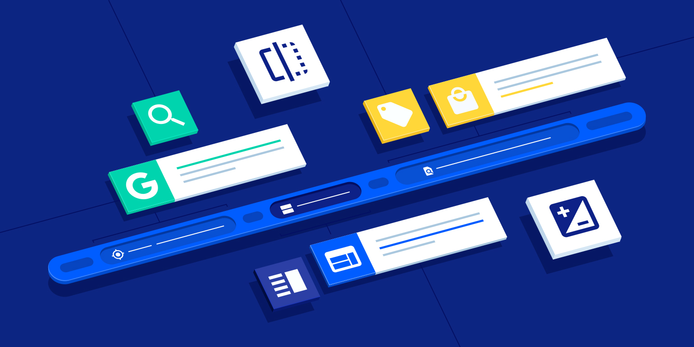

Advertising is a key component of all media whether print or television. The insight to refine advertising plans, advertising monitoring and make strategic business decisions is extremely essential. Media tracking of India owns an efficient advertisement tracking tools that offers you the details of which ad appeared in which medium and how many times
"It is not just your advertisement that matters, tracking it to identify if it is fulfilling its job is also vital"
Why advertisement tracking?
Advertisement tracking can even be helpful to determine the total ROI (return on investment) value of advertising per month. It even enables you to track competitors advertising campaigns and identify where they stand. The clips from our advertising clipping service can be used as proof of advertising an event or campaign. Our video clipping service is immaculate as we offer high definition videos.

We are proud to be critics
Has the message conveyed by you, well received by the target audience? Media Tracking of India offers you to identify the same with our advertisement tracking services. We provide the opportunity to rectify any errors that may have been overlooked initially before much damage is done